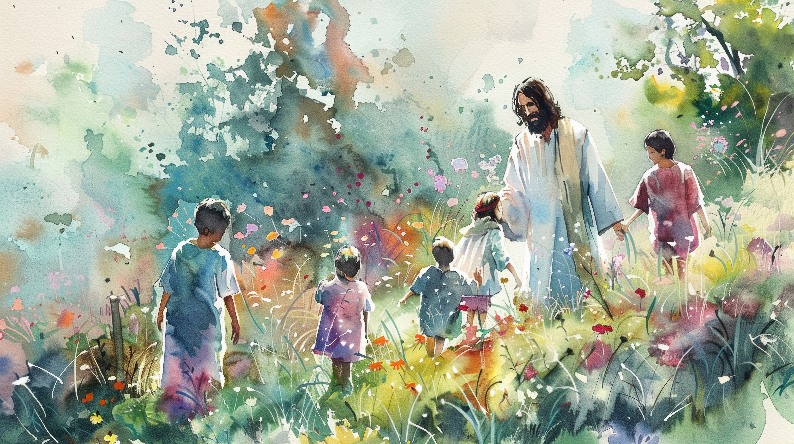

“And he took their little children, one by one, and blessed them, and prayed unto the Father for them.”
3 Nephi 17:21
Like the Savior, we are striving to minister to your children one by one as we pray for them and create experiences that will build their faith and strengthen their testimonies. Thank you for sharing your wonderful children with us in Primary!
Love, Sister Satterfield, Sister Jussel, Sister Moss, and Sister Smidt
Myles Satterfield
Turning 7
Brooklyn Jensen
Turning 10
Payton Jussel
Turning 10
Caden Carnahan
Turning 8
Brooklyn Carnahan
Turning 9
Hank Walters
Turning 8
Primary Program
Sunday · Sacrament Meeting
August 31 – September 6
“Let Every Thing That Hath Breath Praise the Lord”
Psalms 102–3; 110; 116–19; 127–28; 135–39; 146–50
September 7 – 13
“He Shall Direct Thy Paths”
Proverbs 1–4; 15–16; 22; 31; Ecclesiastes 1–3; 11–12
September 14 – 20
“God Is My Salvation”
Isaiah 1–12
September 21 – 27
“A Marvellous Work and a Wonder”
Isaiah 13–14; 22; 24–30; 35